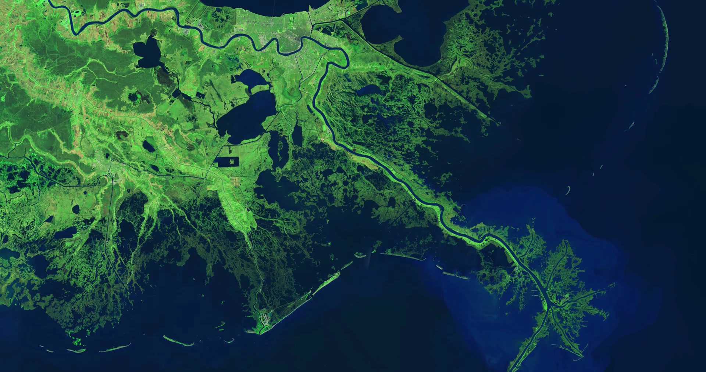

Geonames for Lake and River Features
A parking space is a location that is designated for parking, either paved or unpaved. It can be in a parking garage, in a parking lot or on a city street. The space many be delineated by road surface markings. The automobile fits inside the space, either by parallel parking, perpendicular parking or angled parking. Depending on the location of the parking space, the time allowed to park may be fixed by regulation, and a fee may be required to use the parking space. It may be designated for free parking. When the demand for spaces outstrips supply vehicles may overspill park onto the sidewalk, grass verges and other places which were not designed for the purpose.
source:Wikipedia

Photo by NASA LANDSAT